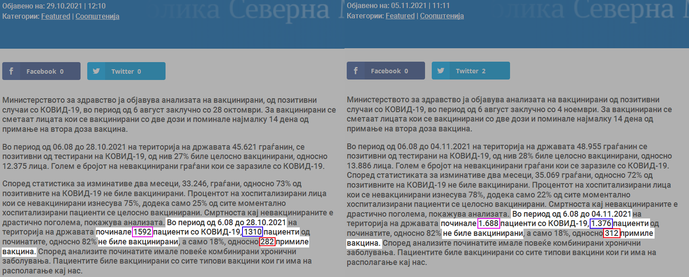
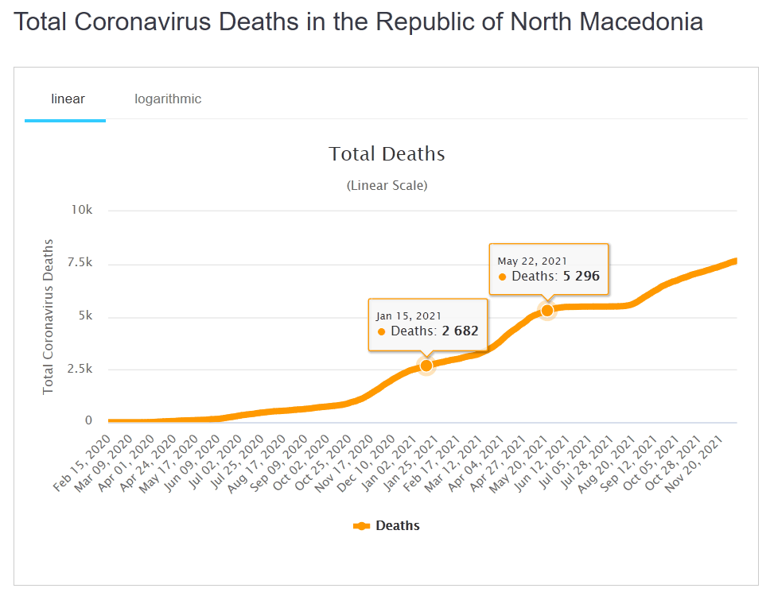
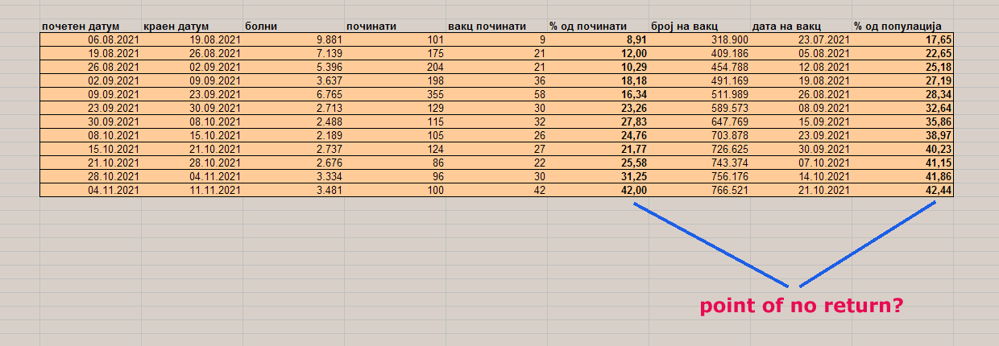

|
Владата објавува неделна статистика на заразени, хоспитализирани и починати од ковид почнувајќи од 06.08.21 па се до денес. Податоците се кумулативни, секоја нова недела бројките се додаваат на изминатиот период. Постои лесен начин да се добијат бројките за секоја недела одделно и прецизно да се пресмета процентот на починати вакцинирани со две дози. Ќе ги разгледаме бројките и процентите за првите две недели од Ноември:
Статистика од 06 Август до 28 Октомври За да се добие информација за првата недела од месец Ноември потребно е бројките кои ги дава владата во првиот линк да се одземат од бројките во вториот линк.  Кликни на сликата за да ја видиш во оригинална големина.Во периодот од 28.10.21 до 04.11.21 од ковид починале 96 лица од кои 66 (69%) невакцинирани и 30 (31%) вакцинирани. Позитивни таа недела се 3334 лица од кои невакцинирати 1823 (55%) и 1511 (45%) вакцинирани. Бројот на вакцинирани лица во оваа недела достигна 756 илјади или 41,86% од бројот на вкупното полнолетно население, кое во времето на референдумот беше 1.806.336. Процентот на заразени вакцинирани таа недела го надминува процентот на вакцинирани во народот т.е. 45% > 42%. Запомнете го ова. Вакцинираните се легло на болеста? Валдата го користи терминот вакциниран само за двојна доза примена 14 дена пред разгледуваната дата. Значи во оние 66 лица спаѓаат: невакцинирани, вакцинирани со 1 доза и вакцинирани со 2 дози после 14.10.21, а 756176 вакцинирани лица е состојбата на 14.10.21. За втората недела од Ноември броевите од вториот линк се одземаат на броевите од третиот линк. Се добива следната состојба: Во периодот 05.11.21 до 11.11.21 од ковид починале 100 лица од кои 58 невакцинирани и 42 вакцинирани. Позитивни таа недела се 3481 лица, од кои невакцинирани 1911 (55%) и 1570 (45%) вакцинирани. Бројот на вакцинирано население таа недела или како што милува владата да каже до 28.10.21, 14 дена пред 04.11.21 е 766521 или 42,44%. Само еден поглед на процентот на вакцинирани болни предходната недела кој беше 45% и процентот на починати вакцинирани оваа недела која ја разгледуваме кој е 42% ви кажува колку вредат вакцините. Ајде да пресметаме според процентот на починати вакцинирани и процентот на вакцинирана популација. Но, прво едно мало загревање. Ако имам популација која е 50% вакцинирана со вакцина која штити 0% од смртен исход за болеста и ако во истиод период имам вкупно 100 починати, колкав ќе биде бројот на починати вакцинирани? Одоговорот е 50. Како на земјата, така и на небото. Ако пак тие 50% од популацијата биле вакцинирани со вакцина која заштитува 50% од смртен исход, на 50 починати невакцинирани колку ќе имам починати вакцинирани? Одговорот е 25. Вакцината ќе заштитела пола од болните кој имаат примено вакцина. Процентот на вакцинирани починати во вкупната бројка на починати за тој период ќе била 33%, затоа што починале само 75 лица. Ако 42% од популацијата е вакцинирана и 42% од починати се вакцинирани, имаме НУЛА ефективност. Едно реторичко прашање. Што ќе биде ако имам 50% од населението вакцинирано со вакцина која не нуди заштита, а е штетна по здравјето? Во истиот онај период во кој ќе имав 100 починати лица, сега би добил бројка над 100. Да речеме отприлика 103 лица. Невакцинирани 50 и 53 вакцинирани. Тоест, процентот на починати, хоспитализирани и заразени вакцинирани го надминува процентот на вакцинирана популација. Пред една недела се појави информација дека просечната ефективност против смртност на вакцините за Ковид-19 е 92% и дека тоа истражување е извршено од страна на институтот Каролинска во Шведска. Две дози од која било вакцина спречуваат смрт од ковид-19 92 проценти Ова истражување не е извршено од страна на Каролинска институтот, истражувањето го предводи д-р Харис Бабачиќ, магистер по епидемиологија и докторанд-истражувач на Институтот Каролинска. Тој не е вработен во институтот, таму е на дошколување. За смртните случаи на вакцинираните ги користи податоците од овој линк на Владата: Статистика од 06 Август до 30 Септември Но, во пресметката за процентот на починати вакцинирани тој почетната дата ја поместува од 15.01.21. Ова го прави со цел да се напумпаат бројките со починати невакцинирани. Додека кај владата од 06.08.21 до 30.09.21 имаме 1162 починати лица, 987 невакцинирани и 175 (15%) вакцинирани со две дози. Кај Бабачиќ имаме 3947 смртни случаи, 3642 невакцинирани, 126 вакцинирани со 1 доза и 179 со 2 дози. Така тој добива процент од само 4,53% починати двојно вакцинирани. Можел да добие и 2,7% доколку за почетен датум го земел 01.04.20. Едноставно пред Август 2021 нема евиденција на починатите според вакцинален статус. Мислите дека некој што ги има сите 10ки на медицински факултет случајно прави ваква грешка? Добар студент, не значи и добар човек. Во Македонија од 15.01.21 до 22.05.21 од ковид починале 2587 лица. Сите се сметаат за невакцинирани. До 08.05.21 имаме само 1,2% вакицинирани или 21890 лица, според дефиницијата вакциниран на Министерството за здравство. Известувањата на владата можат да се видат на овај линк: Севкупна статистика од 06 Август до денес Табела каде бројките се изведени за секоја недела посебно. Диференцијални рачун :) Разделени се броевите на починати, вакцинирани заклучно со две недели пред тоа и нивните проценти, за да се запримети дека процентот на вакцинирани починати побрзо расте од процентот на вакцинирана популација. Да бев водач на локална мафија, сериозно ќе размислував да ги седнам овие од влада да се објасниме околу бројките. Зошто владата промовира некој кој тврди дека вакцината штити 92%? Господо се работи за децата. Лесно е за нас да си удриме по 2 вакцини и дирек в кафана, ама ако продолжиме вака на децата ќе му оставиме доживотно да примаат по 2 дози годишно непроверена вакцина со интервентна дозвола. Ќе дозволиме да ги прогласуваат за болни или мртви врз база на ПЦР тест, а не како што треба со преглед од стручно лице? Ќе дозволиме да ги држат затворени во противуставни вонредни состојби? Ќе дозволиме да не смеат да работат, ако таа работа не може да се извршува од дома? Се заради тоа што на извесен број луѓе не им смета да работат од дома цел живот? Да носат маска цел живот и кога има и кога нема епидемија? Ниското ниво на вакцинација во Македонија е слика на недовербата која народот ја има према официјалните лица. И сега таа недоверба оправдано ќе се зголеми. Не му верувам на Бабачиќ. Му верувам само на Бог-Алах, сите други да си носат доказ! Во 2 години, ниту една јавна научна дискусија помегју група на доктори кои сметаат дека природниот имунитет е подобар и оние кои сметаа дека „вакциналниот“ е подобар во случајот наречен ковид. Ниту една спротивставена јавна дискусија помеѓу доктори во врска со: маски, вакцинација на деца, смртност на болеста, трошење пари за ПЦР тестови... Само сеење на страв преку медиумите. Рестрикции за невакцинираните, а ни еден производител на вакцина ни тестирал ни тврдел дека вакцината што ја произведува штити од зараза, туку само од тешка клиничка слика и смртен исход.
"Meanwhile, there is currently no conclusive evidence to claim the COVID-19 vaccine stops people spreading the virus that causes the disease – nor is there for the opposite." Филипче тврдеше дека 100% спасуваат од смрт и се 100% безбедни. Еве не е така, Филипче го знаеше тоа дури и во моментот кога го изјавуваше. Исто како и Бабачиќ. И сега трета доза? Четврта? Израел стигнаа до четврта доза. Нема резултат на вирусот. Единствениот резултат кои трета и четврта доза го носат е тоа што вакцинираните со две дози повеќе не се сметаат за вакцинирани. Ако примате додатни дози, си ја продолжувате „слободата“ за само уште 6 месеци и ја скратувате слободата на другите. Ако престанете со ковид дозите, ќе бидете слободни и вие и сите останати. Едноставно, прекин на вакцинирањето значи и прекин на играта. Ќе продолжи животот онаму каде што застана во 2019 година. |